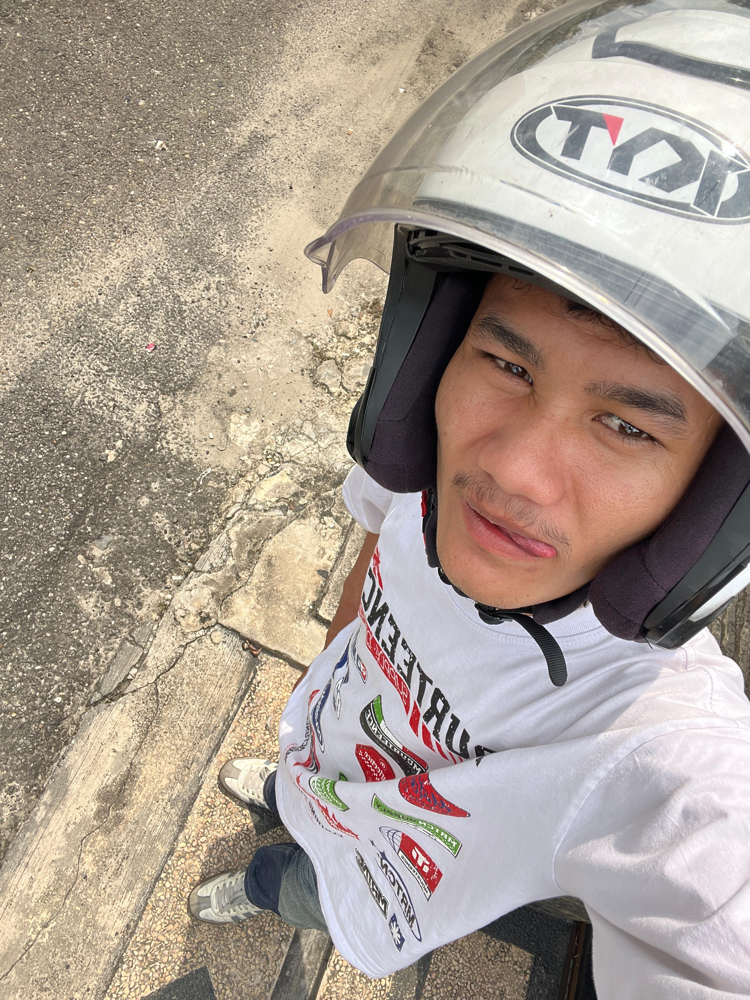

Momen yang tak terlupakan ✨

Lebaran tahun ini menjadi salah satu momen yang paling berkesan dalam hidup saya. Setelah menjalani ibadah puasa selama satu bulan penuh di bulan Ramadan, akhirnya hari kemenangan tiba. Sejak malam takbiran, suasana sudah terasa sangat berbeda. Suara takbir berkumandang di mana-mana, menciptakan suasana haru dan penuh kebahagiaan.
Pagi hari saat Idul Fitri, saya dan keluarga bangun lebih awal untuk mempersiapkan diri melaksanakan sholat Id. Kami mengenakan pakaian terbaik dan berangkat bersama ke masjid. Suasana di masjid sangat ramai, dipenuhi oleh masyarakat yang datang untuk beribadah.
Setelah melaksanakan sholat Id, kami pulang ke rumah dan langsung saling bersalaman. Momen saling memaafkan ini menjadi bagian yang paling mengharukan. Saya meminta maaf kepada orang tua dan keluarga atas segala kesalahan yang pernah dilakukan.
Setelah itu, kegiatan dilanjutkan dengan berkumpul bersama keluarga besar. Kami saling mengunjungi rumah saudara, bercengkrama, dan menikmati hidangan khas Lebaran seperti ketupat, opor ayam, dan berbagai kue tradisional.
Tidak hanya itu, saya juga menyempatkan diri untuk bertemu dengan teman-teman. Kami berbagi cerita, tertawa bersama, dan mengenang momen-momen yang telah kami lalui sebelumnya. Suasana kebersamaan ini membuat Lebaran terasa semakin hangat.
Salah satu hal yang paling saya sukai saat Lebaran adalah tradisi berbagi. Memberikan sebagian rezeki kepada yang membutuhkan memberikan kebahagiaan tersendiri. Hal ini mengajarkan saya untuk selalu bersyukur dan peduli terhadap sesama.
Lebaran bukan hanya tentang makanan atau pakaian baru, tetapi juga tentang mempererat hubungan, memperbaiki diri, dan memulai lembaran baru yang lebih baik. Saya merasa sangat bersyukur dapat merasakan kebahagiaan ini bersama orang-orang terdekat.
Semoga kebahagiaan dan kedamaian di hari Lebaran ini dapat terus dirasakan sepanjang waktu, dan semoga kita semua dapat menjadi pribadi yang lebih baik setelah melewati bulan Ramadan.